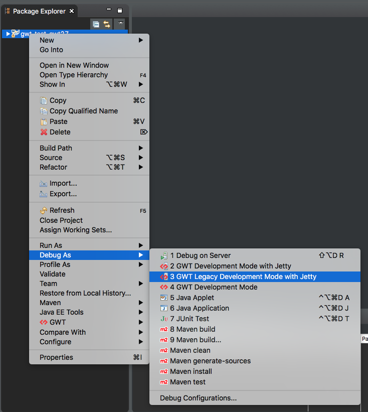

Legacy Development Mode is used to launch a process which compiles the application, runs a web server and uses a process OOHPM to connect to the browser. The OOPHM process is no longer supported in the modern browsers.
- The
DevModelauncher will run the Super DevMode CodeServer by default in GWT 2.7.0+ and to turn on Legacy dev mode use-nosuperDevMode. - The legacy
DevModelauncher will create a program argument “-nosuperDevMode” in GWT 2.7.0+.
Reference
bindAddress
Use -bindAddress 0.0.0.0 to bind the web server to every available host ip address.
Launching
Create and reuse a launcher by right clicking on the project and going to the Debug As and then to GWT Legacy Development Mode with Jetty.
